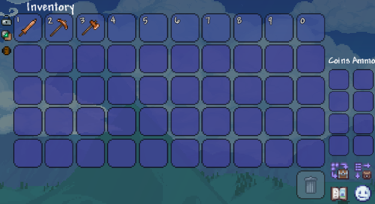
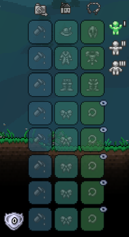
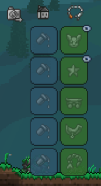

In terraria, getting to know the inventory system is crucial throughout your terraria playthrough. The inventory UI is a sophisticated system allowing you to sort your items, accessories, armor, weapons, and way more.

By default, the terraria inventory screen looks like this, and you can access it by clicking [ESC]. These are your inventory slots. The first row of inventory slots, or the lighter blue slots is your hotbar. Those are your slots you will use in daily use. Keep your tools, weapons, and other important things there. The rest of the slots are your regular inventory spaces, so put everything else. On the left, you'll see coins and ammo slots. Coins are useful as it is the main currency in the game, and ammo is useful for bows and guns, which can prove to be especially powerful for rangers.

In terraria, this is where your armor and accessories lay and help you in battle. The first column is dedicated to dyes, where you can dye your armor / accessories with any color dye, and it's purely cosmetic. The second column is also purely cosmetics, and it is your vanity slots. This is for your "cool-looking" armor and for informational accessories like the metal detector, compass, lifeform analyzer and way more. These actually show you different stats, like your position, rare enemies nearby, etc. Lastly, the last column is for your actual armor and accessories. This will actually provide you with useful buffs and defense, and you only have a limited amount of slots for accessories, so choose wisely.

In the armor and accessories area, you can see three icons. One of them is a chain looking item. Clicking it will bring you to the equipment page, which is like a little extension of your accessories. Here, you can specifically equip pets, light pets, minecart skins, mounts, and grappling hooks. These are less game-changing as accessories, but are still good quality of life improvements during your playthrough.